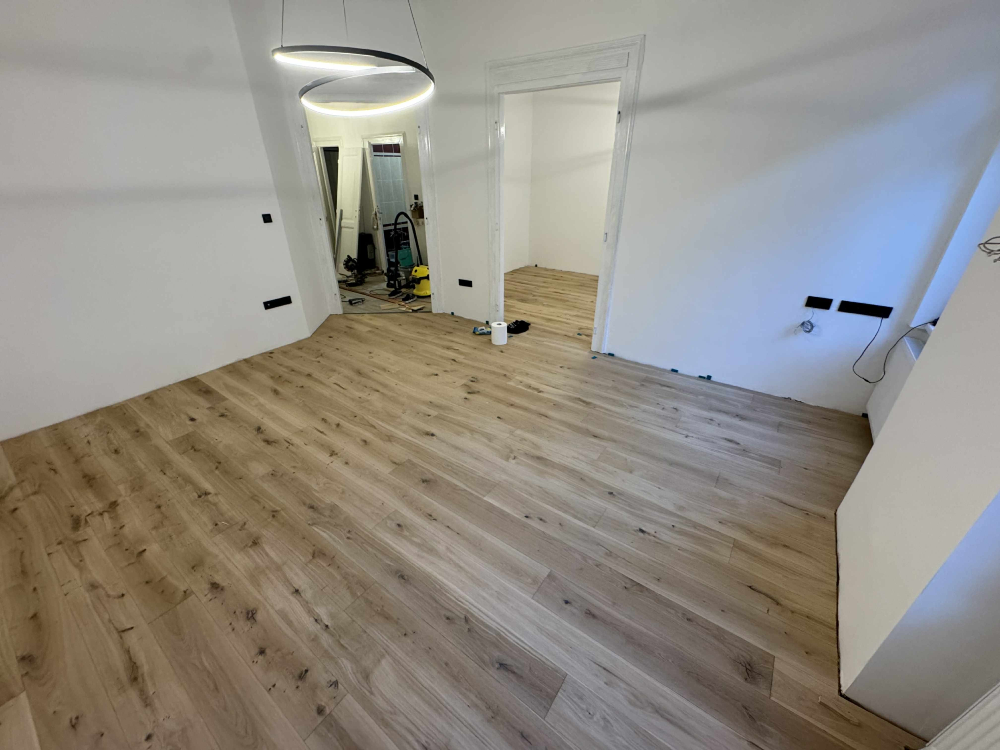
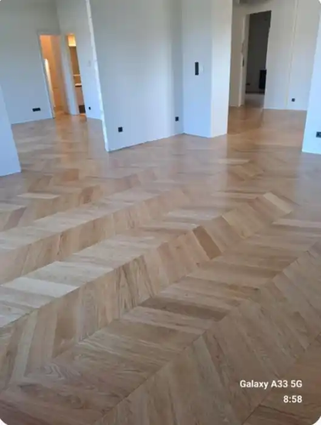
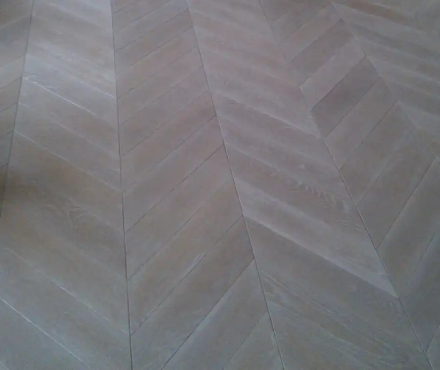
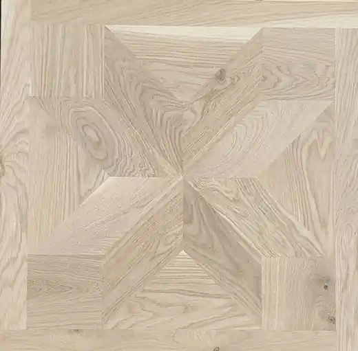
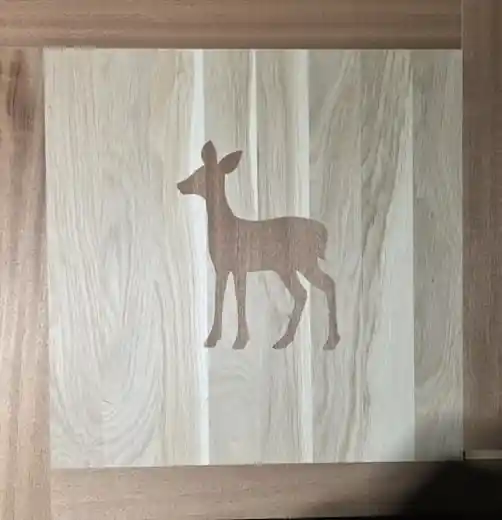
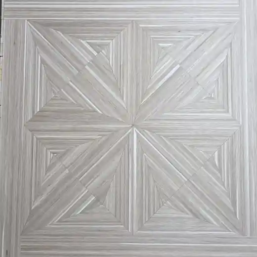
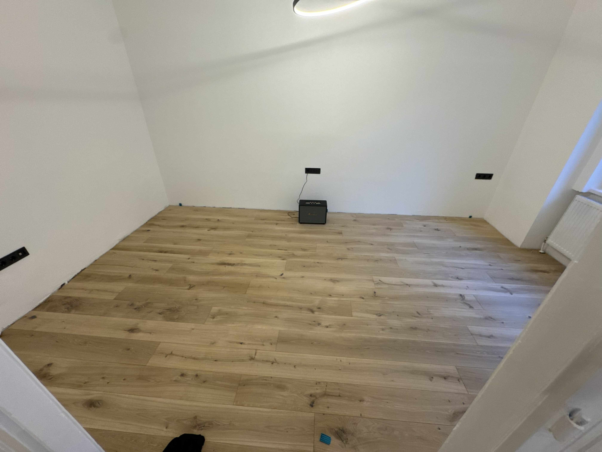

Svédpadló
12 000 Ft/m²-től + ÁFA
Klasszikus valódi fa parketta, közvetlenül a gyártótól.
A svédpadlótól az egyedi táblaparkettáig. Saját gyártás, egyedi méretek és valódi fa.
Nettó árak, felületkezelés nélkül.


Klasszikus valódi fa parketta, közvetlenül a gyártótól.

Karakteres geometrikus megjelenés valódi fából.
Több tucat meglévő minta vagy teljesen egyedi tervezés.
Három évtizede gyártunk rétegelt parkettát. Eddig elsősorban olasz, osztrák és német partnereink számára készítettünk kész- és félkész parkettát, amelyeket saját termékeikként forgalmaztak. Most saját termékeinkkel közvetlenül a vásárlók felé is nyitunk.

Klasszikus és modern geometrikus minták.

Figurális és dekoratív minták, például gyerekszobába.

A lamellákat összeragasztjuk, majd az így kialakított anyagból új lamellákat fűrészelünk. A rajzolat magából a faanyagból alakul ki.
Küldhet saját ötletet, rajzot, fotót vagy inspirációs képet. Az első egyeztetés díjmentes. A részletes egyedi tervezés tervezési díjas; megrendelés esetén a tervezési díjat 100%-ban beszámítjuk a parketta árába.
Ötlet → Egyeztetés → Tervezés → Gyártás
Van egy elképzelésemA táblaparkettákból előzetesen 10–15 mintát választhat ki. Ezekből személyes mintaválogatást készítünk. Előzetes egyeztetéssel sok esetben személyesen is meg tudjuk mutatni a kiválasztott mintákat.
Mintákat választokSaját munkák kerülnek ide. A fotókat később töltjük fel.

Válogatott, szinte göcsmentes.
Karakteresebb fa, látható göcsökkel.
Szíjácsot is tartalmazó, változatos rajzolat.
Különleges, újrafűrészelt lamellákból kialakuló faanyag.
Olajozás · Lakkozás · Strukturált kefélés · Kézi gyalulás · Öregbítés
Sok esetben a helyszíni felületkezelést javasoljuk, így a végleges szín és felület a helyiséghez igazítható. Készre felületkezelve is rendelhető.
Termék, minta, fafaj, válogatás, méret és mennyiség.
Műszaki részletek és végleges ajánlat.
50% előleg.
Jellemzően 30–60 nap.
A fennmaradó 50% átvételkor fizetendő.
Igen. A 2 és 3 rétegű parketta egyaránt alkalmas padlófűtéshez.
Jellemzően 30–60 nap, a választott terméktől és mintától függően.
Alapként tölgy és kőris, de különleges, kereskedelmi forgalomban beszerezhető és műszakilag megfelelő fafajból is tudunk fedőlamellát gyártani.
Svédpadló: 2 rétegű 120 vagy 140 mm; 3 rétegű 120–250 mm szélesség; 400–3000 mm hossz. Chevron: alap 120×600 mm, egyedileg maximum 1200 mm hossz. Táblaparketta: 500×500 mm-től kb. 1100×1000 mm-ig, téglalap alakban akár 2000 mm hossz.
Fuvarozóval vagy a vevő saját szállításával.
Elsősorban Budapesten és Sopronban tudunk szakembert ajánlani.
Telefon · E-mail · WhatsApp · Messenger